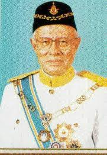
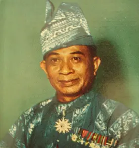

SMKRLNR Tech

Menelusuri jejak penubuhan, kegemilangan, dan latar belakang SMK Raja Lope Nor Rashid.
SMK Raja Lope Nor Rashid ditubuhkan demi memenuhi keperluan pendidikan komuniti setempat. Bermula dengan blok bangunan yang terhad, sekolah ini mula mengorak langkah melahirkan modal insan yang berilmu.
Nama sekolah ini diambil sempena nama tokoh yang banyak berjasa, mencerminkan identiti, warisan, serta penghormatan yang tinggi terhadap sumbangan beliau dalam landskap tempatan.
Melangkah ke era moden, sekolah kini dilengkapi dengan infrastruktur teknologi yang lebih baik bagi menyokong pembelajaran abad ke-21 dan melahirkan generasi celik kod digital.
Proposal penubuhan dikemukakan kepada YB. En. Mohd. Khir Johari (Menteri Pelajaran) oleh En. Mohamad Hj. Kassim (Pengerusi PIBG S.K. Tanjong Piandang).
Permintaan ulangan dibuat kepada Tuan Syed Abu Barakbah (Pengarah Pelajaran Perak). Memorandum turut dihantar kepada Tan Sri Hamdan Sheikh Tahir (KPP).
Bangunan sekolah mula dibina di atas kawasan seluas 10.47 ekar dan siap sepenuhnya dalam tempoh satu tahun.
En. Abd Jalil Mohd Yusof dilantik sebagai pengetua pertama. Sekolah pada mulanya dinamakan Sekolah Menengah Tanjong Piandang.

Hari pertama penggal kedua persekolahan dibuka dengan 232 orang pelajar Tingkatan 1, 90 orang pelajar Kelas Peralihan, dan 8 orang guru.
Nama sekolah ditukar kepada Sekolah Menengah Raja Lope Nor Rashid sempena nama Yang Amat Mulia Raja Lope Nor Rashid (Orang Besar Jajahan Kerian).

Dua kelas Tingkatan 4 bermula. Bilangan pelajar melonjak kepada 1,095 orang dengan kekuatan 36 orang kakitangan akademik dan sokongan.
Menjadi sebuah sekolah menengah penuh yang menawarkan kelas bermula daripada Kelas Peralihan sehingga ke Tingkatan 5.